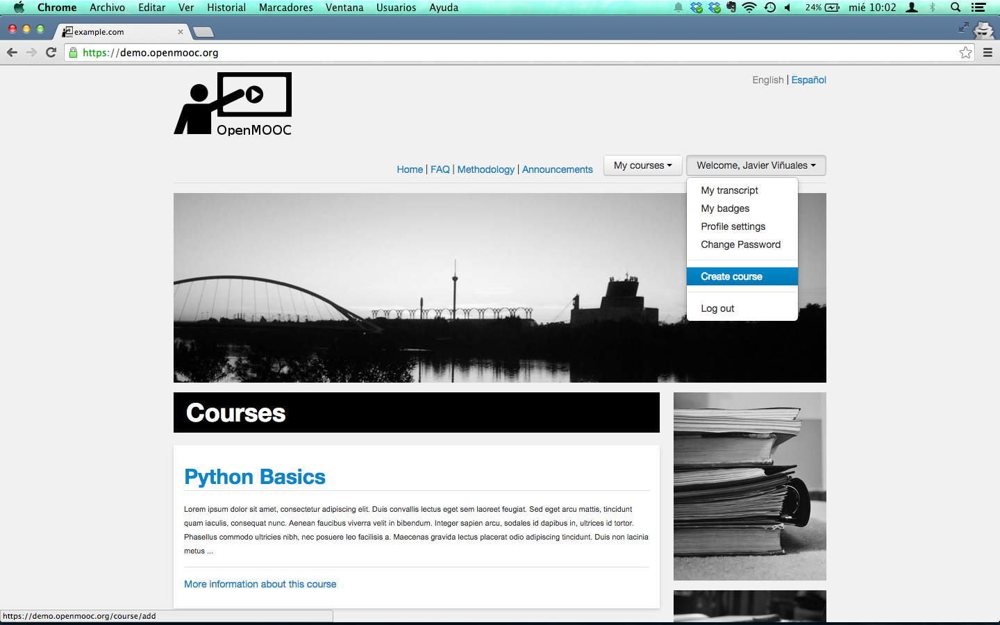
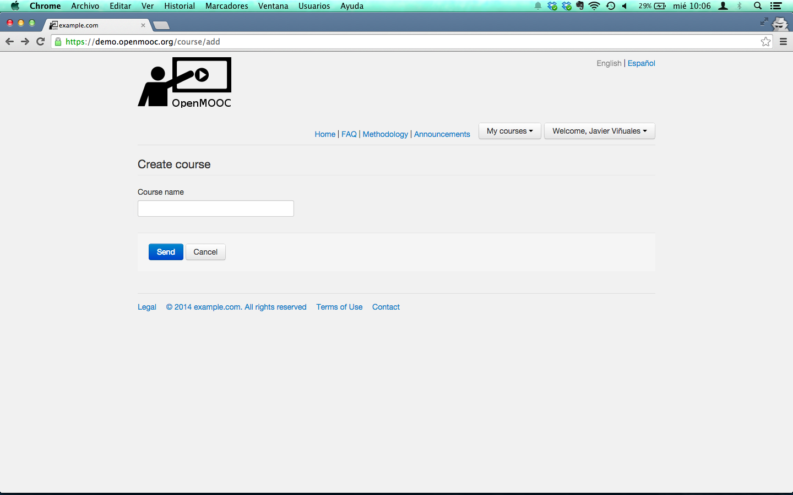

9. Pill view¶
9.1. Overview¶
You can add a Discussion component to a unit, to pose a question related to the Unit and give students a chance to respond and interact.
9.2. Create a Discussion Component¶
Under Add New Component, click Discussion.
In the Discussion component that appears, click Edit.
When the Discussion component editor opens, follow the guidelines in the editor to fill in the Category, the optional Display Name, and the Subcategory fields.
The value in the Display Name field identifies the discussion in the course content. The values in the Category and Subcategory fields appear in the list of discussion topics on the Discussion page. To uniquely identify the discussion in your course, each Category / Subcategory pair that you supply must be unique.